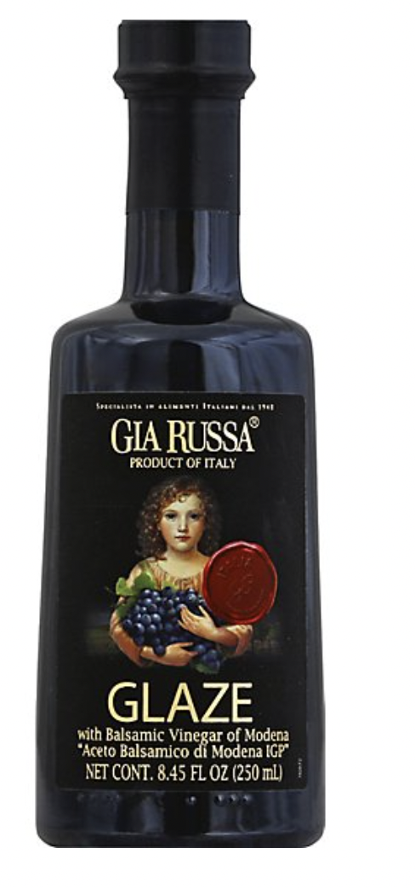
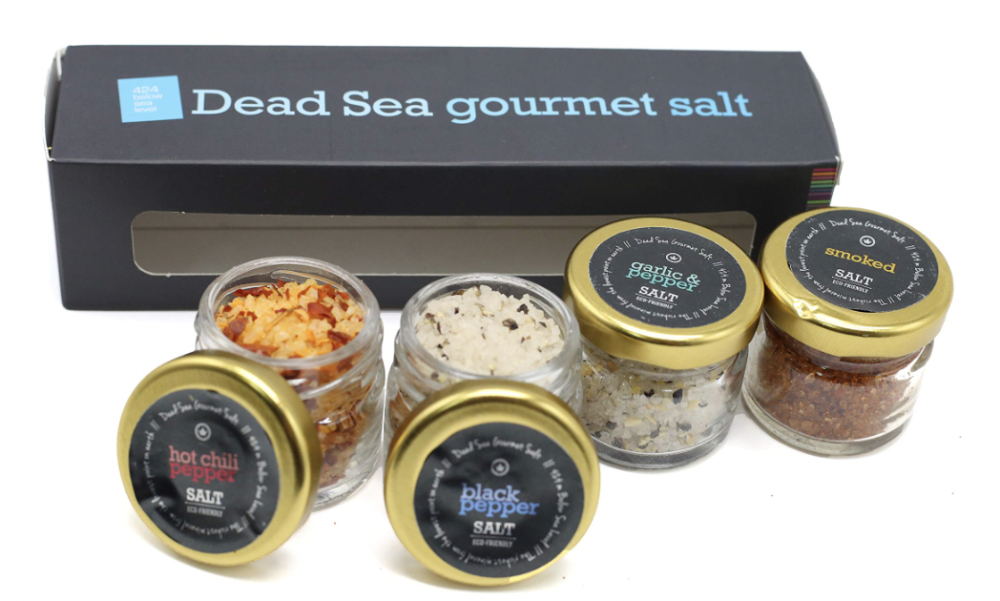

Ingredients:
Premium Balsamic Vinegar of Modena (Grapes, Acetic Acid), Natural Brown Sugar, Cooked Grape Must, Contains Sulfites. This exquisite Balsamic Glaze is crafted with a perfect blend of aged vinegar, natural brown sugar, and cooked grape must, delivering a harmonious balance of sweetness and acidity. The result is a versatile glaze that adds a touch of sophistication to your culinary creations. Drizzle it over salads, roasted vegetables, or grilled meats to elevate the flavors with its rich and complex taste. The inclusion of premium Balsamic Vinegar ensures an authentic and luxurious experience, making it a must-have condiment for the culinary enthusiast. Savor the artistry of flavor with our Artisan Balsamic Glaze!
Artisan Balsamic Glaze - 8.5oz
Reviews

Ingredients:
A curated selection of premium sea salts sourced from around the world, this Gourmet Sea Salt Sampler is a testament to culinary sophistication. Immerse your taste buds in the rich, nuanced flavors of hand-harvested salts, each with its unique origin and mineral composition. From the delicate Fleur de Sel to the robust Himalayan Pink Salt, this collection includes a diverse array of textures and taste profiles. Elevate your culinary creations with these exceptional salts that add depth and complexity to every dish. Crafted with care, the sampler is a blend of Cyprus Flake Salt, French Grey Sea Salt, Black Lava Hawaiian Salt, and more. Enhance your cooking experience and savor the essence of gourmet craftsmanship with this thoughtfully curated Gourmet Sea Salt Sampler.
Gourmet Sea Salt Sampler - Exquisite Collection of Artisanal Salts
Reviews

Truffle Infused Olive Oil - Premium Culinary Elegance
Reviews
Exquisite Dark Chocolate Sea Salt Caramels - 8oz
Reviews